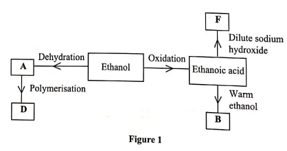

Chemistry
Paper 2 (2019)
INSTRUCTIONS
Answer all questions
-
- Alkanes are said to be saturated hydrocarbons.
- What is meant by saturated hydrocarbons. (1 mark)
- Draw the structure of the third member of the alkane homologous series and name it. (2 marks)
- When the alkane, hexane, is heated to high temperature, one of the products is ethene.
- Write the equation for the reaction. (1 mark)
- Name the process described in (b). (1 mark)
- Study the flow chart in Figure 1 and answer the questions that follow.

- Identify A. (1 mark)
- State one physical property of B. (1 mark)
- Draw the structure of D. (1 mark)
- Give a reason why D pollutes the environment. (1 mark)
- Write an equation for the formation of F. (1 mark)
- Describe an experiment which can be used to distinguish butene from butanol. (2 marks)
- Alkanes are said to be saturated hydrocarbons.
-
- Zinc occurs mainly as zinc blende. Name one other ore from which zinc can be extracted. (1 mark)
- The flow chart in Figure 2 shows the various stages in the extraction of zinc metal. Study
it and answer the questions that follow

- Write an equation for the reaction which occurs in the roasting chamber. (1 mark)
- Describe the process that takes place in the blast furnace. (3 marks)
- Explain why molten lead is added to the condenser. (1 mark)
- State two uses of zinc. (1 mark
- Give one reason why the extraction of zinc causes pollution to the environment. (1 mark)
- Explain the observations made when zinc metal is added to hot sodium hydroxide. (2 marks)
- Figure 3 is a flow chart that shows the process that occurs in the manufacture of nitric(V)
acid
- Name substance P, Q, R and S.
P......................(1 mark)
Q.....................(1 mark)
R.....................(1 mark)
S....................(1 mark - To obtain substance R, ammonia is heated at 900°C in the presence of air and a catalyst. The
product is then cooled in air.
- Name the catalyst for the reaction. (1 mark)
- Write the equations for the two reactions described in (b). (2 marks)
- Other than nitric(V) acid, name another product that is formed. (1 mark)
- When ammonia is reacted with nitric(V) acid, it produces a nitrogenous fertiliser.
- Explain why fertilisers play a major role in food production (2 marks)
- State two problems associated with the use of nitrogenous fertilisers. (2 marks)
- Name substance P, Q, R and S.
-
- Explain the following observations:
- The colour of aqueous copper(II) sulphate fades when a piece of magnesium metal is dropped into the solution. (2 marks)
- A piece of iron bar is coated with a brown substance when left in the open on a rainy day.(2 marks)
- A sample of water is suspected to contain aluminium ions (AP). Describe a laboratory experiment that can be carried out to show that Al-ions are present in the water sample. (3 marks)
- In an experiment to determine the number of moles of water of crystallisation of a hydrated
compound, Naso,. X 1,0, 5g of the compound were heated strongly to a constant mass.
- Explain how a constant mass was obtained. (2 marks)
- During the experiment, the mass of the residue was found to be 2.205g. Determine the number of moles of water of crystallisation in the compound. (Na 23.0; 0-16.0: S = 32.0; H-1.0) (3 marks)
- Explain the following observations:
-
- What is meant by molar heat of neutralisation? (1 mark)
- In an experiment to determine the molar heat of neutralisation, 50cm of IM hydrochloric acid
was neutralised by adding 10 cm portions of dilute sodium hydroxide. During the experiment,
the data in Table 1 was obtained.
Table 1
Volume of sodium hydroxide 0 10 20 30 40 50 60 Temperature of mixture 25.0 27.0 29.0 31.0 31.0 30.0 29.0 - Write the equation for the reaction in this experiment. (1 mark)
- On the grid provided, plot a graph of temperature (Y-axis) against volume of sodium
hydroxide (X-axis) added. (3 marks)

- Determine from the graph the:
- volume of sodium hydroxide which completely neutralises 50 cm of IM hydrochloric acid. (1 mark)
- change in temperature, ΔT, when complete neutralisation occurred. (1 mark)
- Calculate
- the heat change. AH when complete neutralisation occurred. (Specific heat capacity -4.2 Jg 'K!, density of solution 1.0 gm-3) (2 marks)
- molar heat of neutralisation of hydrochloric acid with sodium hydroxide. (1 mark)
- How would the value of molar heat differ if 50 cm of IM ethanoic acid was used instead of 1M hydrochloric acid? Give a reason. (2 marks)
-
- What is meant by standard electrode potential of an element? (1 mark)
- Use the standard electrode potentials given below to answer the questions that
follow.
- State whether acidified MnO,- can oxidise M2.. Give a reason (2 marks)
- Select two half-cells which when combined will give the highest e.m.f. (1 mark)
- Write the cell representation for the cell formed in b (ii). (1 mark)
- Calculate the E' value for the cell formed in b (iii). (2 marks
- A mass of 1.24g of a divalent metal was deposited when a current of 6A was passed through a solution of the metal sulphate for 12 minutes. Determine the relative atomic mass of the metal. (1 Faraday = 96,500 C mol-1) (3 marks)
- State two applications of electrolysis. (1 mark)
-
- What is meant by rate of reaction. (1 mark)
- In the space provided, sketch the diagram of a set-up that can be used to determine the rate of reaction between manganese(IV) oxide and hydrogen peroxide. (3 marks)
- A student placed a small amount of liquid bromine at the bottom of a sealed gas jar of air
as shown in Figure 4.

- Describe what will be observed: (1 mark)
- after two minutes .........
- after 30 minutes ..........
- Use the Kinetic theory to explain the observations: (2 marks)
- after 2 minutes
- after 30 minutes ................
- Describe what will be observed: (1 mark)
- Some plants have seeds that contain vegetable oil.
- Describe how the oil can be obtained from the seeds. (3 marks)
- Explain how it could be confirmed that the liquid obtained from the seeds is oil. (1 mark)
Marking Scheme
-
- Alkanes are said to be saturated hydrocarbons.
- What is meant by saturated hydrocarbons. (1 mark)
- Compounds made up of carbon to carbon single bond
- Draw the structure of the third member of the alkane homologous series and name
it. (2 marks)

- What is meant by saturated hydrocarbons. (1 mark)
- When the alkane, hexane, is heated to high temperature, one of the products is ethene.
- Write the equation for the reaction. (1 mark)
- C6H4 → C2H4 + C4H10
- C6H4 → C2H4 + C4H8 + H2
- C6H4 → 2C2H4 + C2H6
- Name the process described in (b). (1 mark)
- Thermal cracking; cracking alone - ½
- Write the equation for the reaction. (1 mark)
- Study the flow chart in Figure 1 and answer the questions that follow.
- Identify A. (1 mark)
- Ethene or C2H4
- State one physical property of B. (1 mark)
- sweet smell/fruity smell/pleasant smell/colourless liquid/msicible with water
- Draw the structure of D. (1 mark)

- Give a reason why D pollutes the environment. (1 mark)
- it is non-biodegradable
- Write an equation for the formation of F. (1 mark)
- CH3COOH(aq) + NaOH(aq) → CH3COONa(aq) + H2O(l) (ignore state symbols)
- Identify A. (1 mark)
- Describe an experiment which can be used to distinguish butene from butanol. (2 marks)
- Add bromine water to both; yellow color of bromine persists in butanol
- Burn both separately; butene burns with a luminous/yellow/sooty flame while butanol burns with a blue flama/non-luminous flame
- Add ethanoic acid to both; butanol produces a sweet/fruity/pleasant smell while butene doesn't provide a sweet smell
- Alkanes are said to be saturated hydrocarbons.
-
- Zinc occurs mainly as zinc blende. Name one other ore from which zinc can be
extracted. (1 mark)
- calamine
- The flow chart in Figure 2 shows the various stages in the extraction of zinc metal. Study
it and answer the questions that follow
- Write an equation for the reaction which occurs in the roasting chamber. (1 mark)
- 2ZnS(s) + 3O2(g) → 2ZnO(s) + 2SO2(g)
- Describe the process that takes place in the blast furnace. (3 marks)
- limestone decomposes to form calcium oxide
- carbon is oxidised to its oxide
- Zinc oxide is reduced to zinc
- PbO is reduced to Pb
- CaO reacts with silica to form silicate
- Calcium silicate dissolves impurities to form slag (max 3)
- Explain why molten lead is added to the condenser. (1 mark)
- prevent reoxidation of zinc/acts as a coolant
- condenses zinc vapor
- State two uses of zinc. (1 mark)
- Making brass
- Galvanizing iron/galvanization
- negative terminal in dry cells; rej. making of dry cells
- Give one reason why the extraction of zinc causes pollution to the
environment. (1 mark)
- disposal of slag makes soil infertile
- gullies are formed
- Pb produced is poisonous
- Global warming due to CO2
- Noise pollution
- dust and smoke produced is poisonous
- SO2 forms acid rain
- Write an equation for the reaction which occurs in the roasting chamber. (1 mark)
- Explain the observations made when zinc metal is added to hot sodium hydroxide. (2
marks)
- Zinc dissolves in sodium hydroxide to form a solution; zinc is amphoteric; bubbles of a colourless gas
- ZInc reacts with steam to produce H2 gas
- Zinc occurs mainly as zinc blende. Name one other ore from which zinc can be
extracted. (1 mark)
- Figure 3 is a flow chart that shows the process that occurs in the manufacture of nitric(V) acid
- Name substance P, Q, R and
S.
P......................Nitrogen(1 mark)
Q.....................Hydrogen(1 mark)
R.....................Nitrogen(II)oxide; Nitrogen (IV) oxide(1 mark)
S....................water(1 mark) - To obtain substance R, ammonia is heated at 900°C in the presence of air and a catalyst. The
product is then cooled in air.
- Name the catalyst for the reaction. (1 mark)
- platinum/titanium; platinum-rhodium rej. rhodium-platinum
- Write the equations for the two reactions described in (b). (2 marks)
- 4NH3(g) +5O2(g) → 4NO(g) + 6H2O(l)
- 2NO(g) + O2(g) → 2NO2(g)
- Other than nitric(V) acid, name another product that is formed. (1 mark)
- Nitric(III)acid or HNO2/Nitrous acid
- Name the catalyst for the reaction. (1 mark)
- When ammonia is reacted with nitric(V) acid, it produces a nitrogenous fertiliser.
- Explain why fertilisers play a major role in food production (2 marks)
- Addition of nutrients in the soil
- Increase food production
- State two problems associated with the use of nitrogenous fertilisers. (2
marks)
- Excess nitrates in drinking water causes stomach upsets/poisonous
- Cause eutrophication/excess growth of vegetation in water bodies
- Causes soils to be acidic
- Causes water bodies to be acidic
- Highly soluble thus wastage cost
- Explain why fertilisers play a major role in food production (2 marks)
- Name substance P, Q, R and
S.
-
- Explain the following observations:
- The colour of aqueous copper(II) sulphate fades when a piece of magnesium metal is
dropped into the solution. (2 marks)
- Magnesium is more reactive than copper; Mg reduces Cu2+ to Cu/copper ions are removed from the solution
- Mg(s)+ CuSO4(aq) → MgSO4(aq) + Cu(s)
- A piece of iron bar is coated with a brown substance when left in the open on
a rainy day.(2 marks)
- In the presence of air(oxgen) and water, iron is oxidized to hydrated iron(III) oxide which is a brown substance/rust
- The colour of aqueous copper(II) sulphate fades when a piece of magnesium metal is
dropped into the solution. (2 marks)
- A sample of water is suspected to contain aluminium ions (AP). Describe a laboratory
experiment that can be carried out to show that Al-ions are present in the water
sample. (3 marks)
- Add ammonia solution until in excess
- Add NaOH until in excess
- Add HCl or H2SO4; soluble carbonate/soluble
- In an experiment to determine the number of moles of water of crystallisation of a hydrated
compound, Naso,. X 1,0, 5g of the compound were heated strongly to a constant mass.
- Explain how a constant mass was obtained. (2 marks)
- Heat strongly, cool and weigh repeatedly until a constant mass is obtained
- During the experiment, the mass of the residue was found to be 2.205g. Determine the
number of moles of water of crystallisation in the compound. (Na = 23.0; 0=16.0: S =
32.0; H=1.0) (3 marks)

- Explain how a constant mass was obtained. (2 marks)
- Explain the following observations:
-
- What is meant by molar heat of neutralisation? (1 mark)
- Heat change that occurs when one mole of OH- ions reacts with one mole of H+ to form 1 mol of water
- In an experiment to determine the molar heat of neutralisation, 50cm of IM hydrochloric acid
was neutralised by adding 10 cm portions of dilute sodium hydroxide. During the experiment,
the data in Table 1 was obtained.
Table 1
Volume of sodium hydroxide 0 10 20 30 40 50 60 Temperature of mixture 25.0 27.0 29.0 31.0 31.0 30.0 29.0 - Write the equation for the reaction in this experiment. (1 mark)
- NaOH(aq) + HCl(aq) → NaCl(aq) + H2O(l)
- On the grid provided, plot a graph of temperature (Y-axis) against volume of sodium
hydroxide (X-axis) added. (3 marks)

- Determine from the graph the:
- volume of sodium hydroxide which completely neutralises 50 cm of IM
hydrochloric acid. (1 mark)
- 33.5 cm3 reading from graph
- change in temperature, ΔT, when complete neutralisation occurred. (1
mark)
- ΔT = 31.65 - 25.0 = 6.65 oC
- volume of sodium hydroxide which completely neutralises 50 cm of IM
hydrochloric acid. (1 mark)
- Calculate
- the heat change. AH when complete neutralisation occurred. (Specific heat
capacity -4.2 Jg-1K-1, density of solution 1.0
gm-3) (2 marks)

- molar heat of neutralisation of hydrochloric acid with sodium
hydroxide. (1 mark)

- the heat change. AH when complete neutralisation occurred. (Specific heat
capacity -4.2 Jg-1K-1, density of solution 1.0
gm-3) (2 marks)
- How would the value of molar heat differ if 50 cm of IM ethanoic acid was used
instead of 1M hydrochloric acid? Give a reason. (2 marks)
- The molar heat of ethanoic acid would be lower; ethanoic acid is a weak acid
- Write the equation for the reaction in this experiment. (1 mark)
- What is meant by molar heat of neutralisation? (1 mark)
-
- What is meant by standard electrode potential of an element? (1 mark)
- This is the potential difference between a standard hydrogen half cell and a half cell of an elemnt containing 1 mol/dm-3 of the ions at 298 K and 1 atm/stp
- Use the standard electrode potentials given below to answer the questions that
follow.

- State whether acidified MnO4- can oxidise M2+..
Give a reason (2 marks)
- MnO4- will oxidies M2+ because it has a higher elctrode potential value than M3+
- Select two half-cells which when combined will give the highest e.m.f. (1 mark)
- Q and P/2Q/Q2 and P2+/P(s)
- Write the cell representation for the cell formed in b (ii). (1 mark)
- P(s)/P2+// Q2(g)/2Q-
- Calculate the Eθ value for the cell formed in b (iii). (2 marks
- 2.87 -- 0.23
=3.10
- 2.87 -- 0.23
- State whether acidified MnO4- can oxidise M2+..
Give a reason (2 marks)
- A mass of 1.24g of a divalent metal was deposited when a current of 6A was passed through a
solution of the metal sulphate for 12 minutes. Determine the relative atomic mass of
the metal. (1 Faraday = 96,500 C mol-1) (3 marks)

- State two applications of electrolysis. (1 mark)
- Decoration
- purification of metals
- extraction of reactive metals
- Manufacture of NaOH
- Manufacture of H2 and Cl2
- electroplating
- sacrificial protection
- cathode protection
- coating of metals
- anodising of aluminium
- What is meant by standard electrode potential of an element? (1 mark)
-
- What is meant by rate of reaction. (1 mark)
- reaction rate is a measure of how much of reactants are consumed or how much products are formed per unit time
- In the space provided, sketch the diagram of a set-up that can be used to determine the rate
of reaction between manganese(IV) oxide and hydrogen peroxide. (3 marks)

- A student placed a small amount of liquid bromine at the bottom of a sealed gas jar of air
as shown in Figure 4.
- Describe what will be observed: (1 mark)
- after two minutes .........The reddish brown color of bromine will be observed just above the bromine liquid
- after 30 minutes ..........the reddish brown color of bromine spreads in the whole jar
- Use the Kinetic theory to explain the observations: (2 marks)
- after 2 minutes.............liquid bromine changes into gaseous state
- after 30 minutes ................bromine diffuses through the air
- Describe what will be observed: (1 mark)
- Some plants have seeds that contain vegetable oil.
- Describe how the oil can be obtained from the seeds. (3 marks)
- the seeds are crushed using a pestil and motar then add a solvent (acetone or ethanol) with continued crushing. the liquid is then decanted into an evaporating dish
- the evaporating dish is placed into the sun to allow solvent to evaporate, leaving behind oil
- Explain how it could be confirmed that the liquid obtained from the seeds is
oil. (1 mark)
- the liquid left after evaporation is placed on a piece of paper. If it leaves a transucent patch, it proves it is oil
- Describe how the oil can be obtained from the seeds. (3 marks)
- What is meant by rate of reaction. (1 mark)